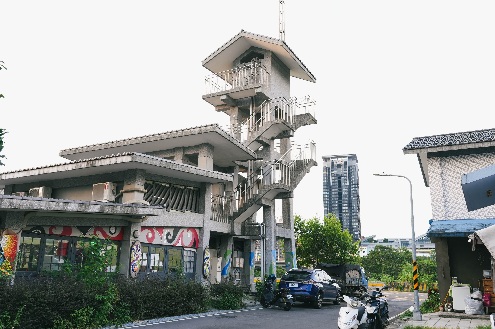
應友人邀約，得知有拍攝豐年祭的機會，這一直是我感興趣的主題，所以我沒有想太多便答應了下來。在此之前，我並不知道大台北地區有原住民部落，甚至還會舉辦豐年祭。在看了紀錄片《Maro'ay to ko kerah 何處是我家》之後，我才瞭解到這些離開原鄉的阿美族人，為了在新的家安定下來，走過了多少艱辛的路。
7月31日，豐年祭前一個月。
初次來到溪洲部落是傍晚時分，紀錄片裡的舊部落已被剷平，變成了河濱公園。對岸的IKEA與高級住宅大樓近在眼前，夜晚點起絢麗的燈光，與彼岸部落的路燈昏黃形成鮮明又諷刺的對比。
部落的房子已經改建成兩層樓的獨棟住宅，棋盤式的街道與流行的建築線條，在族人的點綴之下，有的種樹種菜，有的築牆造園，反而變得更有生氣。有許多耆老搬張椅子坐在門口抽煙閒聊。我們的外觀很顯然是外人，在部落裡閒晃，卻沒有被投以異樣眼光。
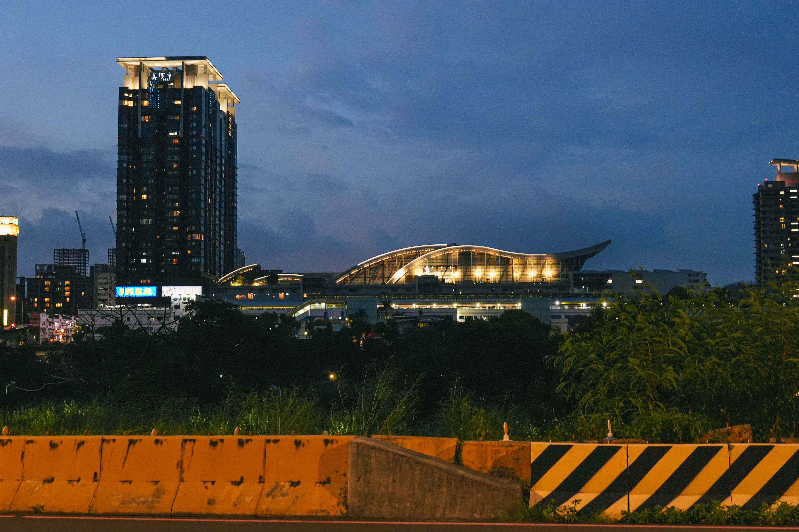
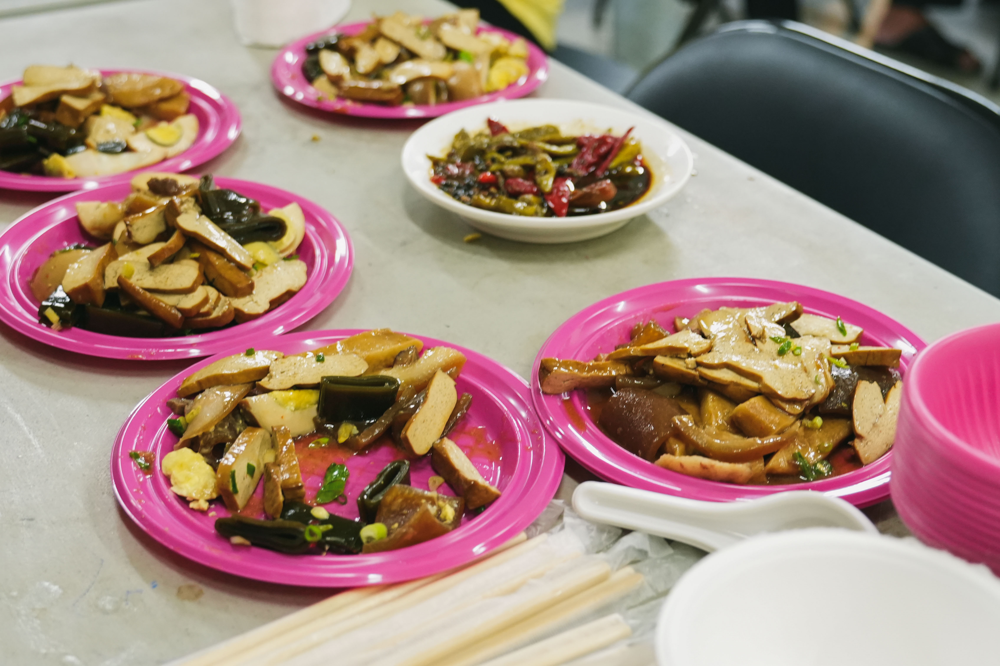
文健站是族人的活動中心，部落的課程與重要會議時常在這邊進行。今日的任務，正是要為豐年祭練歌練舞做準備。還沒進到文健站，就已經聽到節奏輕快的族語音樂，人稱理事長的Nakaw在電腦前正忙著公務，看到我們前來，就馬上放下手邊的工作熱情地歡迎我們。文健站的摺疊桌椅排成一個ㄇ字型，三面玻璃門窗採光極佳，夕陽把窗邊族人的手作作品照得透亮。
晚飯時間一到，族人們紛紛移動到文健站來。今天的晚餐是糯米飯與小菜滷味，配上族人特製辣椒醬油，還有一大鍋南瓜蔬菜湯。我們還沒找到時機自我介紹，族人見我遲遲不敢盛飯，卻毫不猶豫地招呼我不要客氣，要吃飽。
部落的第一餐，已有家的味道。
飯畢，眾人把桌子撤下，圍成一個C字而坐。頭目與前頭目說話開場後，眾人卻陷入漫長的面面相覷。一旁的族人簇擁著身材壯碩、面孔深邃的前青年會長天龍領唱，他卻靦腆地笑說已經忘記怎麼唱了。部落的孩子們在一旁玩得不亦樂乎，尖叫與跑動也讓空氣鼓躁起來，耆老們坐在圓圈之後靜靜地看著一切發生。Nakaw神情略顯尷尬，用手機連續切換了幾首族語音樂，示意天龍趕緊領唱，天龍則將手機貼近耳邊，用力回憶腦中的旋律。
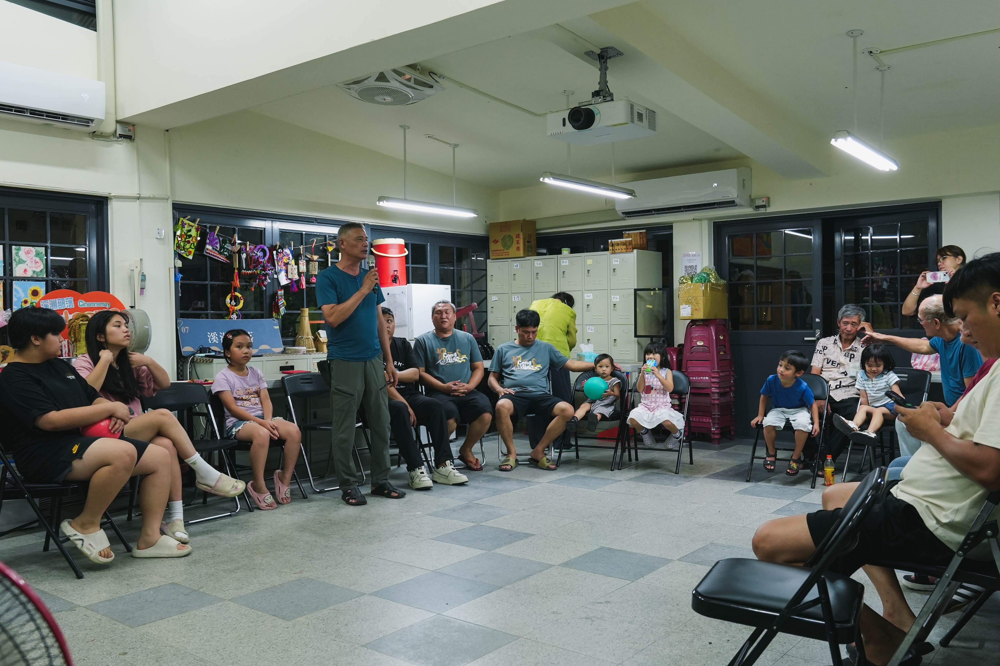
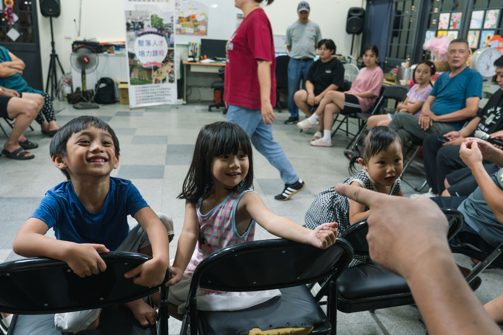
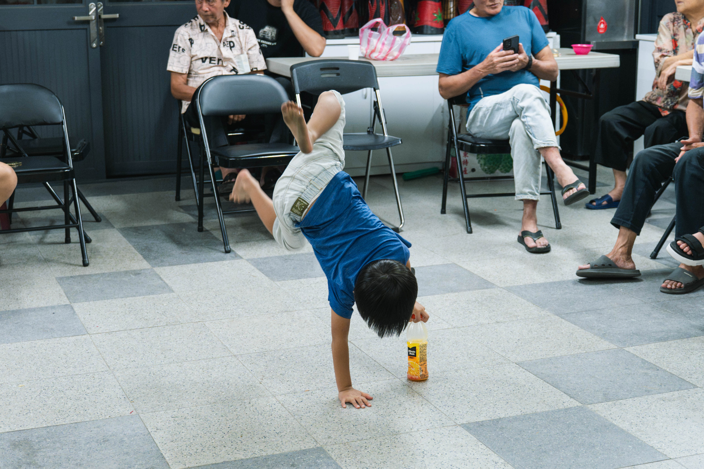
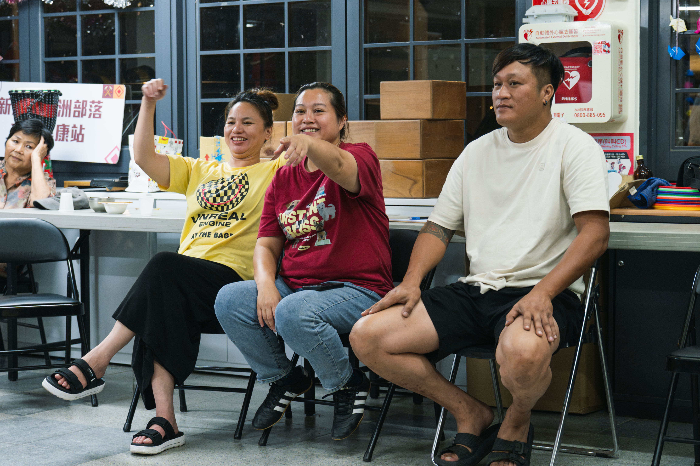
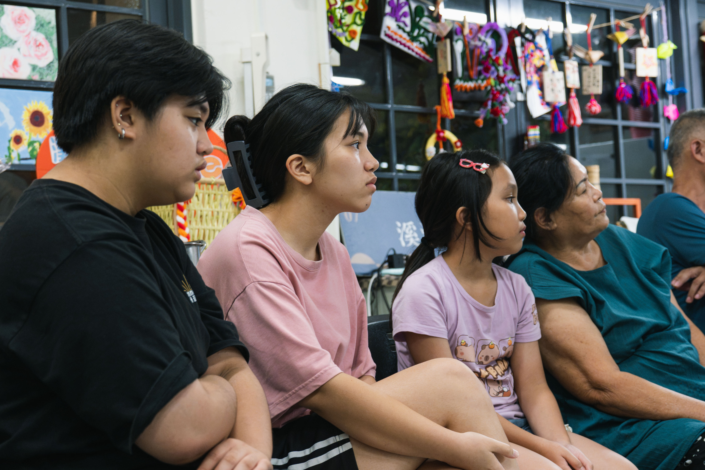
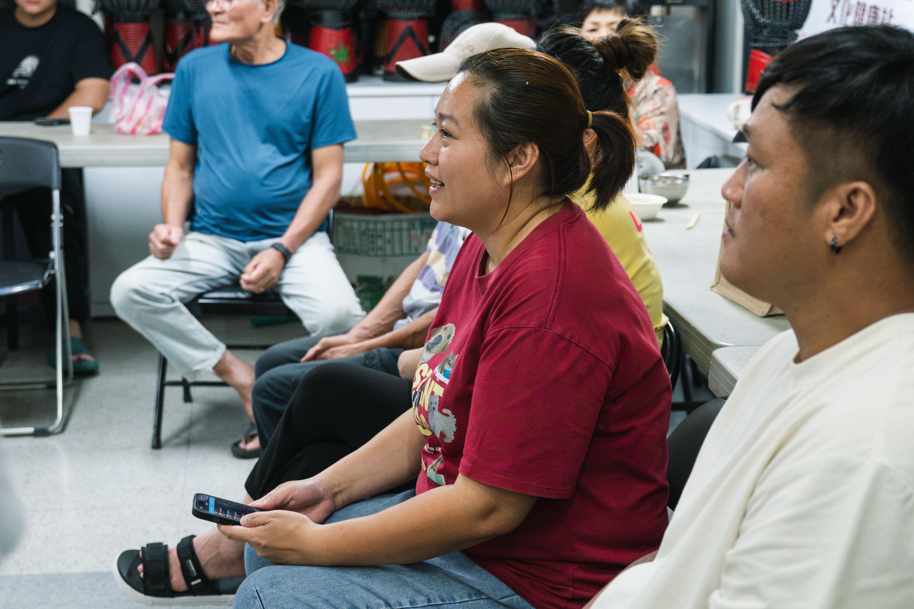
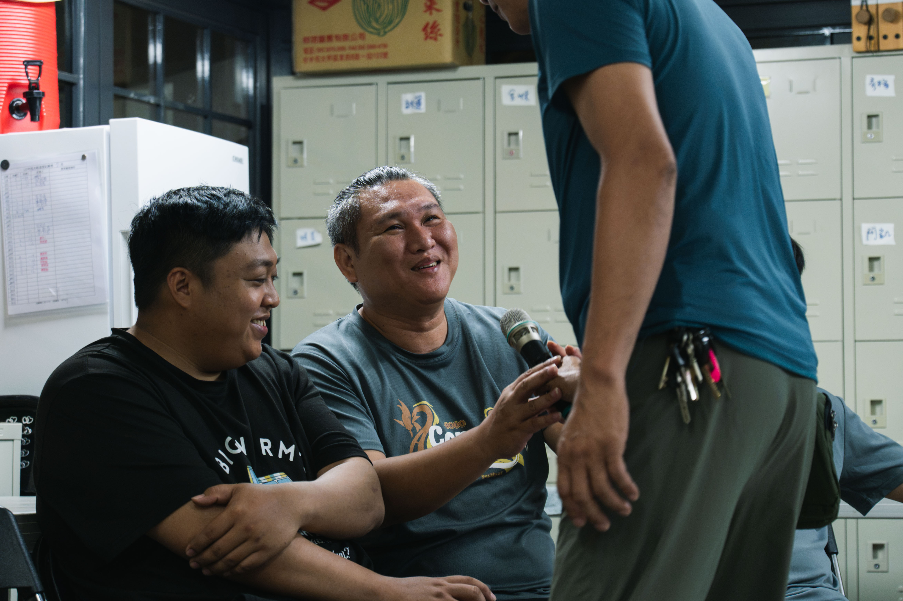
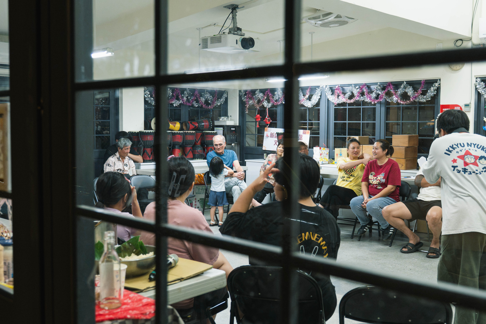
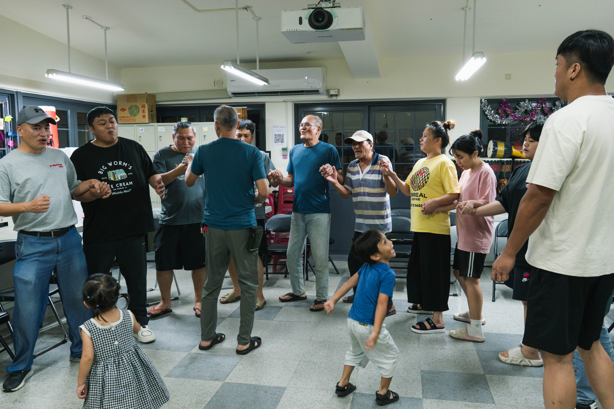
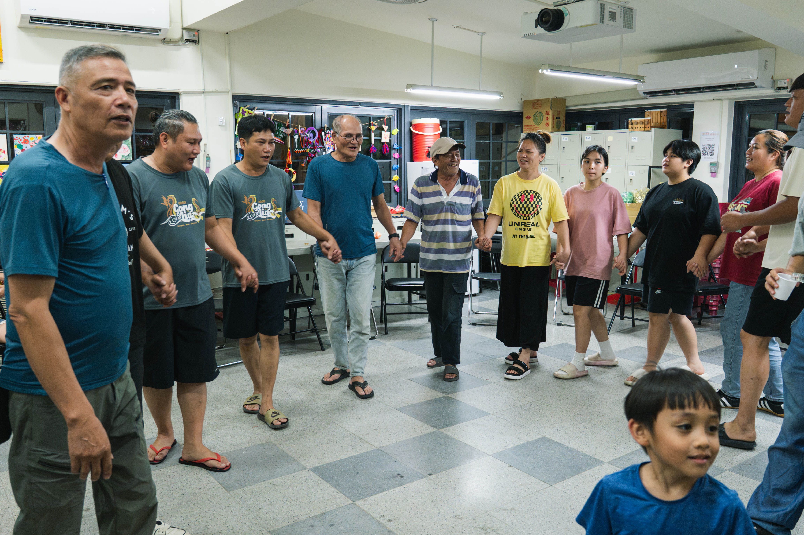
在僵持不下的同時，前頭目不知從哪裡默默掏出一瓶紅標米酒，連同酒杯將麥克風一起塞到天龍面前。黃湯下肚之後，眾人終於突破僵局，天龍領唱，耆老們隨後加入，年輕人與婦女們也一起牽起手唱起歌來。
練習結束後，我們把晚餐的小菜當下酒菜，跟頭目喝酒聊天。問起練習的歌曲是從哪裡來的，才知道大部分都是在原鄉部落錄下，繼續傳唱到台北的。當耆老們淡出部落的核心，年輕人忙於都市的工作，原鄉文化來到台北，似乎也在都市的節奏下被快速沖淡。但是當族人們開始唱歌舞蹈時，我發現小朋友們不只變得更加興奮，也會隨著音樂搖擺，我想他們一定分辨得出來，唱歌是他們的生活中很重要的一部分。想到一首歌有可能的就是在這樣的耳濡目染之下傳承了數百年，我不禁肅然起敬。
頭目並不是想像中的那樣嚴肅而權威，他身穿領口有點鬆的排汗衫，面帶微笑，講沒幾句話就會冷不防地冒出一個笑話，讓我們接得措手不及。我想起我的爺爺也是這個樣子。
我們從部落的古早歷史聊到現況，再聊到族人們的來歷。與其說是聊，不如說是我們在聽頭目說故事，只要一巡酒的喘息時間，頭目就能想到新的話題，氣氛不尷尬，我們也聽得津津有味。溪洲部落的阿美族人來自花蓮的各個部落，他們的第一二代大多是為了工作機會而來到台北，在這裡落地生根，現在傳承到了三四代，已經有許多族人認為溪洲部落就是他們的家鄉。
談起我們是來自哪所大學，我如同過去跟別人介紹自己一樣說我來自政大。雖然我完全沒有想要炫耀的意思，不過在社會上的多數場合，這塊招牌自然會迎來讚美的場面話，因此我也自然而然地以準備接受稱讚之姿迎接回應，沒想到頭目的回應卻是：你們政大的圖書館我有去蓋，好多教室的課桌椅也是我搬的。
我理所當然地享受著圖書館讀不完的書、涼快的冷氣，坐在課桌椅上消磨生命，卻從來沒想過建立起這一切的人，有可能從來都沒有機會擁有這些資源。而現在那個人就坐在我面前，毫無保留地招待素不相識的我，讓我拍攝，跟我分享這麼多故事。
我從來沒有被這樣的慚愧與罪惡感迎面襲擊過。
部落里的男性族人大多也都從事建設工程，從模板工、木工，到設計師，他們幫都市建起了一棟又一棟的高樓，但都市卻把他們趕了出去，甚至連他們生存的一席之地都不放過。但是他們團結，他們抗爭，他們努力，他們感謝，他們原諒，他們平等地對待每一個願意踏進部落聽故事的人。
我不知道該如何應對內心的衝擊，我知道我也是在這個結構裡，踩著他們的汗水與淚水的既得利益者。那個瞬間，我的直覺告訴我，我必須學習把視角放低，用我的鏡頭和文字讓更多人認識他們、理解他們，同時也反省自己對生活資源的理所當然。
啊，第一次踏入溪洲部落，就上了深刻的一課。
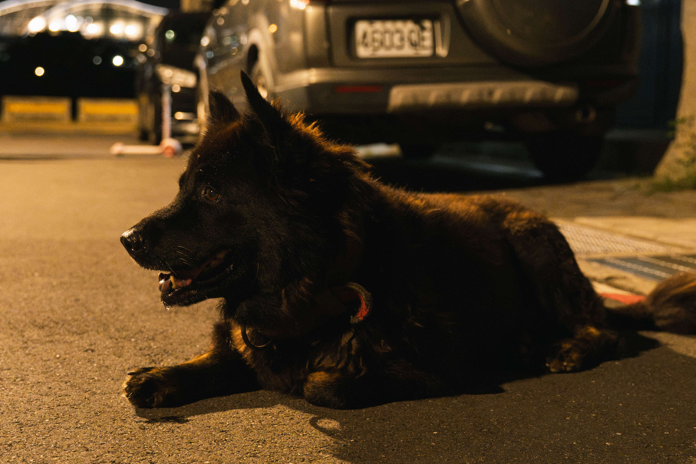
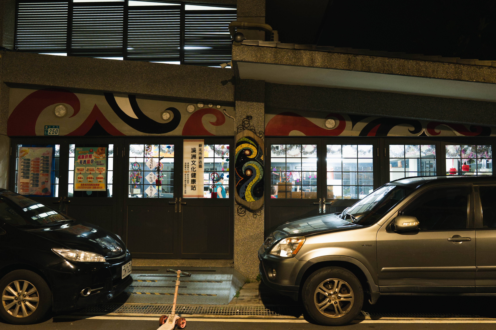